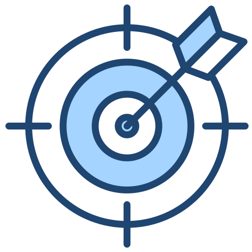
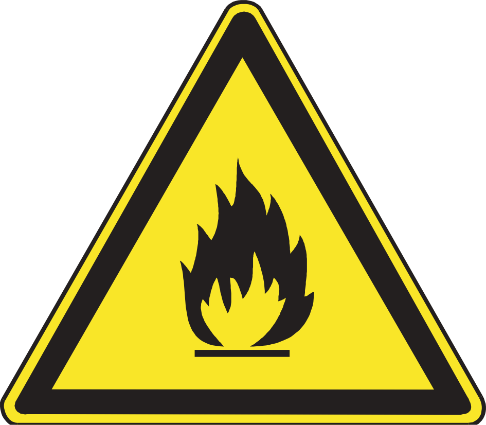
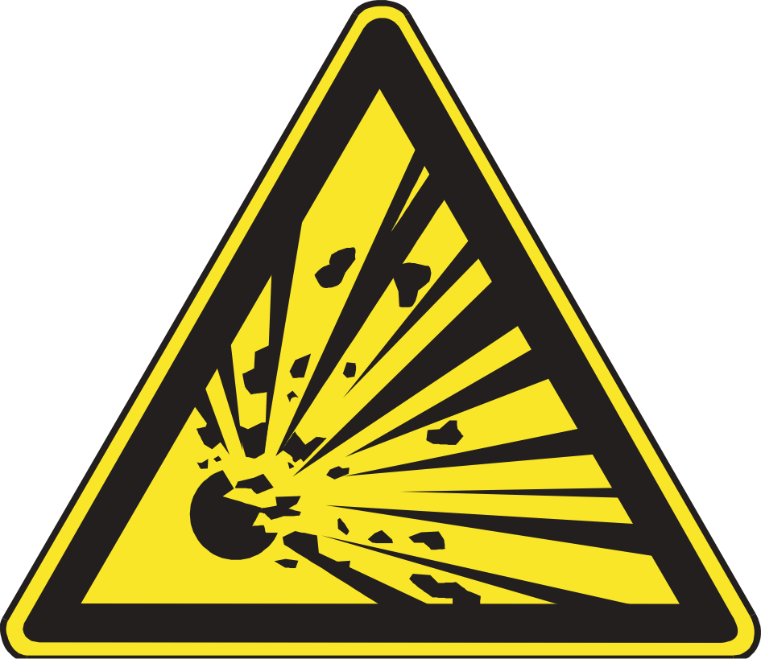
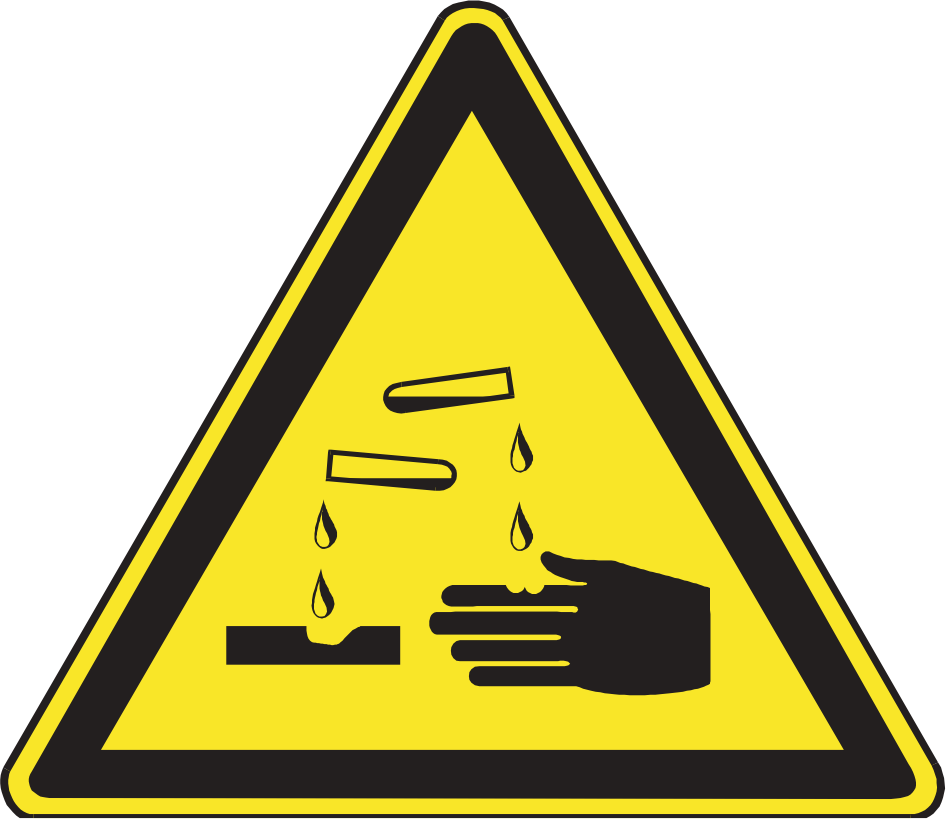
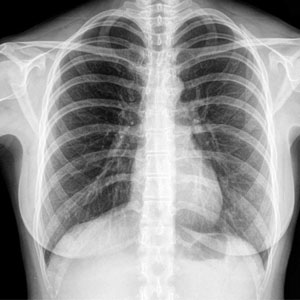
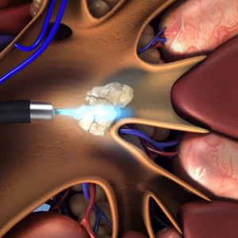
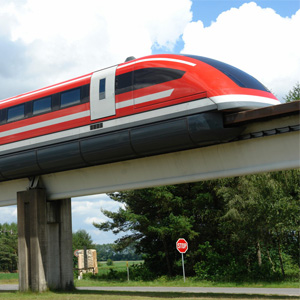
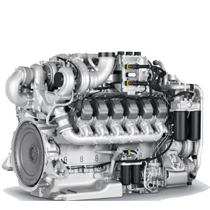
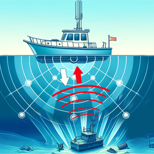

# Hakikat Ilmu Fisika - Fisika sebagai Produk Ilmiah - Fisika dan Sikap Ilmiah - Fisika dan Metode Ilmiah - Keselamatan Kerja di Laboratorium - Peranan Fisika bagi Kehidupan --- - Fisika berasal dari akar kata Yunani kuno, *φῠ́σῐς*, yang sering diterjemahkan ke dalam bahasa Inggris sebagai *nature*. - Dalam bahasa Indonesia, kata itu berarti dua: <u>kodrat</u> dan juga <u>alam</u>. - Maka, fisika dapat dikatakan sebagai ilmu yang mempelajari alam sekitar kita, dan lebih-lebih bagaimana cara kerjanya. </ul> --- ## ### Fisika sebagai Produk Ilmiah #### Fisika sebagai produk ilmiah meliputi berbagai fakta, konsep, prinsip, rumus, teori, hukum, model, paradigma. - **Fakta** merupakan kenyataan sesungguhnya dari peristiwa yang terjadi di alam, yang dapat ditangkap dengan indra manusia dan diakui oleh banyak orang sebagai pengetahuan. - **Opini** adalah pendapat seseorang mengenai sesuatu. ‘Maria memakai baju merah’ adalah sebuah fakta. --- ### Fisika sebagai Produk Ilmiah - **Konsep** adalah gagasan atau abstraksi yang kita bentuk dalam pikiran kita dari benda, obyek, atau fenomena alam di luar sana. - **Prinsip** adalah pola yang berlaku umum dari hubungan antar konsep yang berkaitan. - Sementara **Hukum** adalah prinsip yang berlaku lebih umum lagi dan kebenarannya telah teruji. --- ### Fisika sebagai Produk Ilmiah - **Teori** adalah kumpulan konsep, hukum, dan gagasan-gagasan yang bersama-sama membentuk sebuah penjelasan akan fenomena tertentu. - **Model** adalah representasi dari benda/sistem yang digunakan untuk lebih mudah memahami, mendefinisikan, mengukur, memvisualisasikan, atau menyimulasikan dengan mengacu kepada hal lain yang sudah diketahui secara umum. --- ### Fisika sebagai Produk Ilmiah - **Paradigma** adalah bangunan besar yang terdiri atas pola, teori, postulat, hukum, dan sebagainya. --- ### Fisika dan Sikap Ilmiah #### Berikut merupakan beberapa sikap ilmuwan yang baik:</h4> <div class="r-hstack justify-center"> <div data-id="box1" style="background: #999; width: 200px; height: 200px; margin: 10px; border-radius: 5px;"></div> <div data-id="box2" style="background: #999; width: 200px; height: 200px; margin: 10px; border-radius: 5px;"></div> <div data-id="box3" style="background: #999; width: 200px; height: 200px; margin: 10px; border-radius: 5px;"><img src="../resources/images/13.png"></div> <div data-id="box4" style="background: #999; width: 200px; height: 200px; margin: 10px; border-radius: 5px;"></div> <div data-id="box5" style="background: #999; width: 200px; height: 200px; margin: 10px; border-radius: 5px;"></div> </div> <div class="r-hstack justify-center"> <div data-id="name1" style="background: #555; width: 200px; height: 70px; margin: 10px; border-radius: 5px;"><small>Berpengamatan tajam</small></div> <div data-id="name2" style="background: #555; width: 200px; height: 70px; margin: 10px; border-radius: 5px;"><small>Objektif</small></div> <div data-id="name3" style="background: #555; width: 200px; height: 70px; margin: 10px; border-radius: 5px;"><small>Mau berbagi</small></div> <div data-id="name4" style="background: #555; width: 200px; height: 70px; margin: 10px; border-radius: 5px;"><small>Berpikiran terbuka</small></div> <div data-id="name5" style="background: #555; width: 200px; height: 70px; margin: 10px; border-radius: 5px;"><small>Rasa ingin tahu</small></div> </div> --- ### Fisika sebagai Sikap Ilmiah Selain sikap, kecakapan ilmiah berikut diperlukan: 1. Mengamati: menggunakan lima indera untuk membuat pengamatan dan pengukuran. 2. Menarik kesimpulan: menggunakan pengamatan dan pengukuran untuk membuat penjelasan. 3. Komunikasi: terampil menggunakan diagram, tabel, grafik, dan bagan. 4. Perencanaan: merencanakan secara hati-hati, termasuk dalam memilih alat. --- ### Fisika dan Metode Ilmiah Metode ilmiah terdiri atas beberapa langkah: 1. Melaksanakan pengamatan atau observasi 2. Merumuskan masalah 3. Kajian pustaka atau mengumpulkan informasi 4. Membuat hipotesis atau dugaan sementara 5. Melakukan eksperimen 6. Menganalisis data 7. Membuat hipotesis atau dugaan sementara 8. Menarik kesimpulan 9. Mengulangi kerja ilmiah --- #### Ada tiga jenis variabel yang perlu diperhatikan pada eksperimen, yaitu sebagai berikut: - Variabel bebas, yaitu variabel yang diubah secara bebas oleh peneliti - Variabel terikat, yaitu variabel yang diteliti, perubahannya bergantung pada variabel bebas - Variabel kontrol, yaitu variabel yang selama eksperimen dipertahankan tetap --- ### Keselamatan Kerja di Laboratorium Aturan-aturan keselamatan umum : 1. Baca beberapa kali semua petunjuk untuk melakukan eksperimen. Ikuti setiap petunjuk secara tepat, seperti yang telah dituliskan. Jika Anda sangsi akan suatu langkah apa saja tentang eksperimen, selalu bertanya dan meminta bantuan pada guru. --- 2. Jangan pernah melakukan kegiatan yang tidak diizinkan oleh guru. Jika Anda ingin melakukan eksperimen berdasarkan ide sendiri, selalu minta izin pada guru sebelum melakukannya. 3. Jangan pernah menggunakan peralatan, kecuali Anda telah diberi izin. --- 4. Selalu berhati-hati untuk tidak menumpahkan bahan-bahan di dalam laboratorium. Jika bahan tumpah, segera tanya guru tentang prosedur yang sesuai untuk membersihkan tumpahan tersebut. 5. Jangan pernah makan makanan atau kudapan di dalam laboratorium. 6. Cuci tangan Anda sebelum dan sesudah melakukan eksperimen. 7. Setelah eksperimen selesai dilakukan, bersihkan daerah kerja Anda dan kembalikan peralatan ke tempat semula. --- ### Keselamatan Kerja di Laboratorium Lambang-lambang Bahaya <div class="r-hstack justify-center"> <div class="tooltip" data-id="box1" style="background: #999; width: 200px; height: 200px; margin: 10px; border-radius: 5px;"><span class="tooltiptext-b-1">Mudah terbakar</span></div> <div class="tooltip" data-id="box2" style="background: #999; width: 200px; height: 200px; margin: 10px; border-radius: 5px;"><span class="tooltiptext-b-1">Mudah meledak</span></div> <div class="tooltip" data-id="box3" style="background: #999; width: 200px; height: 200px; margin: 10px; border-radius: 5px;"><span class="tooltiptext-b-1">Bahan berkarat</span></div> <div class="tooltip" data-id="box4" style="background: #999; width: 200px; height: 200px; margin: 10px; border-radius: 5px;"><span class="tooltiptext-b-1">Bahan beracun</span></div> <div class="tooltip" data-id="box5" style="background: #999; width: 200px; height: 200px; margin: 10px; border-radius: 5px;"><span class="tooltiptext-b-1">Bahan iritasi</span></div> <div class="tooltip" data-id="box6" style="background: #999; width: 200px; height: 200px; margin: 10px; border-radius: 5px;"><span class="tooltiptext-b-1">Bahan radioaktif</span></div> </div> --- ### Peranan Fisika bagi Kehidupan dalam Bidang Kedokteran dan Kesehatan: <div class="tooltip" style="width: 250px; height: 250px; margin: 10px; border-radius: 5px;"><span class="tooltiptext-b-2">Penemuan sinar rontgen untuk mendeteksi patah tulang</span></div> <div class="tooltip" style="width: 250px; height: 250px; margin: 10px; border-radius: 5px;"><span class="tooltiptext-b-2">Penemuan sinar laser untuk memecah batu ginjal dalam tubuh</span></div> --- ### Peranan Fisika bagi Kehidupan dalam Bidang Pertanian: <div class="tooltip" style="width: 250px; height: 250px; margin: 10px; border-radius: 5px;"><span class="tooltiptext-b-2">Penemuan bibit unggul dari proses rekayasa genetika</span></div> <div class="tooltip" style="width: 250px; height: 250px; margin: 10px; border-radius: 5px;"><span class="tooltiptext-b-2">Penemuan peralatan pertanian yang membantu kerja petani</span></div> --- ### Peranan Fisika bagi Kehidupan dalam Bidang Transportasi: <div class="tooltip" style="width: 250px; height: 250px; margin: 10px; border-radius: 5px;"><span class="tooltiptext-b-2">Penemuan konsep gerakan benda yang berpengaruh terhadap pembuatan alat transportasi</span></div> <div class="tooltip" style="width: 250px; height: 250px; margin: 10px; border-radius: 5px;"><span class="tooltiptext-b-2">Pembuatan kereta maglev menggunakan superkonduktor</span></div> --- ### Peranan Fisika bagi Kehidupan dalam Bidang Industri: <div class="tooltip" style="width: 250px; height: 250px; margin: 10px; border-radius: 5px;"><span class="tooltiptext-b-2">Penemuan berbagai jenis mesin, semisal mesin diesel untuk memudahkan proses produksi</span></div> <div class="tooltip" style="width: 250px; height: 250px; margin: 10px; border-radius: 5px;"><span class="tooltiptext-b-2">Penggunaan sonar dalam industri kelautan.</span></div>